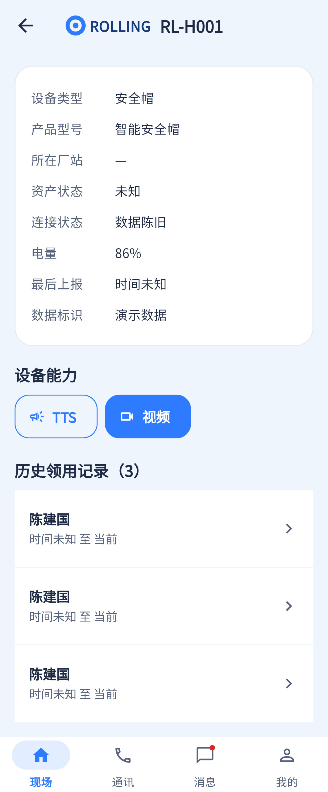

状态呈现部分实现；独立异常提示、相关事件和人员直联入口缺失。
相同 · 已有基础
对应同一个设备详情组件，能展示陈旧/未知数据，不直接判人员违规。
不同 · UI与场景
设计是安全带异常专门状态卡；旧当前截图为安全帽陈旧状态，设备品类和数据不同，不能逐值相比。
01 / 先看 UI
两图显示宽度统一；设计390px与当前360逻辑宽的画布不同。各图可独立滚动到底，点击“原图”放大。


使用既有组件截图；业务数据为示例。
02 / 逐项核对功能与小交互
入口：设备详情 → 离线设备状态 · 当前形态：状态
| 编号 | 部位 | 设计要求 | 当前UI | 功能结论 | 下一步 |
|---|---|---|---|---|---|
| 12-01 | 页面归属 | 异常设备详情状态 | 当前复用DevicePage | 已有代码：非独立路由 | 按同一详情状态改造 |
| 12-02 | 设备品类 | 安全带RL-B001异常 | 截图为RL-H001安全帽 | 样例差异：不代表程序无法打开安全带 | 补同设备同状态样例再比较图卡 |
| 12-03 | 异常标签 | 明确连接中断 | 当前connectionLabel仅在线/数据陈旧/未知 | 部分：未独立表达离线/中断，online=0不直接给离线 | 统一后端质量字段与文案，不混同陈旧/中断 |
| 12-04 | 数据时间 | 最近上报、电量未知 | 当前两项字段已有 | 已有代码：未知降级 | 上报过期与电量未知分别显示 |
| 12-05 | 提醒 | 连接中断不直接违规、联系核实 | 设备详情未见对应黄色提醒 | 缺失：此页面风险说明卡 | 补说明，避免设备异常直接给人违规标签 |
| 12-06 | 领用人 | 人员与所属作业卡，可查看人员 | 只有历史领用区 | 部分：可经历史到人，但缺当前摘要和作业 | 补当前人员卡；作业需真实查询 |
| 12-07 | 相关事件 | 查看相关事件按钮 | 此详情没有事件入口 | 缺失：事件页也未接deviceId过滤参数 | 补设备维度查询或明确人员范围，不能跳全站冒充相关 |
| 12-08 | 联系现场 | 联系当前人员按钮 | 仅设备能力入口，无独立联系人按钮 | 缺失：无通话能力的安全带尤其缺入口 | 按绑定人员查可用帽/账号；保留能力检查 |
源码依据
queries/devices.dart:314,422；queries/query_utils.dart:74；events/events_page.dart:13
链接为随报告保存的带行号快照；行号对应分析时源码。以函数和字段共同定位，不能将请求代码视为执行成功证据。